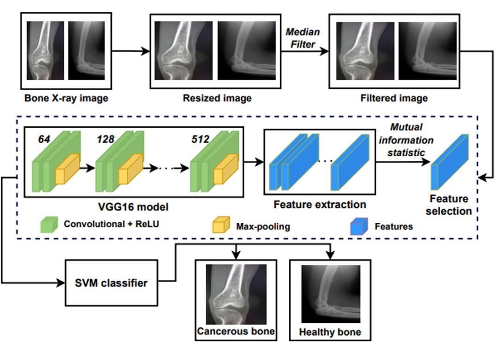

About
MIoT, or Medical Internet of Things, merges healthcare devices, systems, and IoT technology. It transforms healthcare through interconnected devices, sensors, and data analytics. MIoT enables personalized medicine, remote patient monitoring, and efficient healthcare management. The global MIoT market is rapidly growing, fostering innovation and attracting investments. With its potential to improve patient care and revolutionize public health, MIoT is reshaping the healthcare industry.
